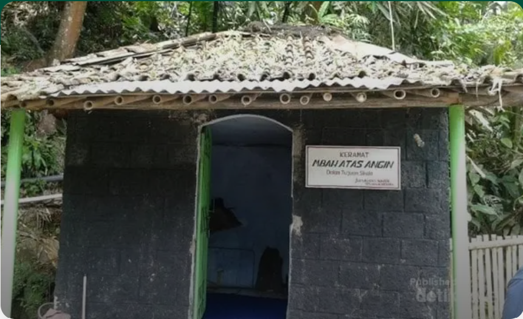

Karya
Makam Mbah Atas Angin Baturaden

Part 3 Terik tampak datang lebih awal hari ini, jam sepuluh pagi aku sudah melahap semua materi perkuliahan. Jumat adalah hari yang tepat untuk menghabiskan waktu di luar pondok karena ngaji diniyah sore libur. Aku, Aisyah, dan Fatimah memilih mengerjakan tugas di perpustakaan sampai jam istirahat tiba. Kita berencana makan siang di kedai baru area masjid kampus yang sedang promo besar-besaran. Belum sempat memesan aku melihat Mas Zaid keluar masjid kampus usai salat jumat, dia mengarahkan motornya ke arahku. Ingin aku berpura-pura tidak melihatnya, sialnya dia sudah menangkap pandanganku dari kejauhan. “Ra, Mas Zaid.” Aisyah membulatkan matanya di depan mataku. Menegaskan keberadaan Mas Zaid dan menyimpan pertanyaan akan kesiapanku ditemui olehnya. Ya jelas aku tidak siap. “Ngga papa Ra, siapa tau Mas Zaid sudah menyesali perbuatannya.” Fatimah membuat harapanku kembali tumbuh. Aku hanya terdiam mematung membiarkan bayang-bayang Halimah memenangkan hati seseorang yang sangat aku cintai hingga tak sadar Mas Zaid sudah berdiri di depanku, Aisyah dan Fatimah meninggalkanku. “Sudah selesai kuliahnya Ra?” Mas Zaid bertanya sambil membuka helm, rambutnya yang sudah cukup panjang untuk ukuran laki-laki berhamburan berantakan menutupi sebagian dahi dan matanya. Kaki kanannya menjadi tumpuan saat standar motor dijatuhkan sedangkan kaki kirinya masih ningkring pada pedal kaki bagian kiri motornya. Hidungnya yang mancung dibiarkan mengempis karena sengaja menghirup udara terlalu dalam sebagai cara menetralkan suasana hati. “Sampun Mas.” Denyar yang sama masih saja muncul ketika aku melihat rautnya yang tenang, melihat jambang dan kumisnya yang sudah menebal, melihat senyumnya yang menawan ditambah dengan celana mocca dan hem panjang navy blue yang lengannya sengaja dilipat tiga per empat. Masih sama seperti saat aku menjadi ratu dikerajaannya. Tapi kini ada yang berbeda dari caranya memandangku, bola matanya seperti memancarkan sesuatu yang tajam yang membuat hatiku tercabik-cabik dan ingin menangis menyalahkannya. Bayang Halimah menebas kagumku, dadaku semakin sesak ingin menangis meraung-raung di depannya dan menuntut cintanya yang sebagian diserahkan untuk Halimah. Tapi aku harus terlihat tegar di depannya, aku tidak mau terlihat hancur dan membuatnya bersalah. “Sudah, jangan mikir macem-macem. Mas mau minta sesuatu sama kamu boleh?” Matanya mencari-cari bola mataku yang aku umpatkan. Sungguh aku rindu dengan tatapannya yang tulus tapi aku tidak berani menatapnya, aku tidak ingin membiarkan gejolak ini tertangkap olehnya. “Nopo Mas?” Aku menjawabnya lirih dan sedikit melontarkan bola mataku menuju bola matanya yang sangat aku rindukan. “Tapi jangan menolak ya, harus mau.” Mas Zaid memaksaku menuruti permintaannya. “Nggih..” “Temenin Mas beli tanaman hias ya, kemarin Kang Hamid, Kang Husen dan kawan-kawan mau bikin taman di sebelah pos lah Mas kebagian beli bunganya. Kamu kan pakarnya bikin lansekap taman Ra hehe. Mau yaa.” Aku hanya terdiam tidak mengiyakan juga tidak menolak. Pasti dia menyanggupi tugas itu biar ada alasan bisa mengajakku pergi. Andai aku tidak dipaksa, pasti aku tidak akan membiarkan kesempatan rinduku tersampaikan begitu saja. “Hey! Kamu tambah cantik kalau lagi nahan rindu Nduk. Jangan kaku begitu lah, Mas terima rindumu Nduk, rindu yang sama untukmu. Haha.” Aku terperanjat mendengar panggilan sayangnya untukku yang sudah lama tak kudengar sejak Halimah hadir diantara kami. Aku merasa sangat disayangi ketika dipanggil Nduk olehnya. Masih sama, Mas Zaid selalu begitu membirkanku malu dihadapannya. Mungkin aku memang terlalu kaku setelah semua ini terjadi. “Nopo sih Mas, mboten kados niku koh.” aku jadi salah tingkah. Mas Zaid terus memandangiku sambil meledekku, membiarkanku semakin malu. “Kangen sama mie ayam mewah Bu Sumi ngga Nduk? Lama ya kita ngga makan di sana, siapa tau bakulnya kangen sama Mas.” Ada saja usaha Mas Zaid untuk mencairkanku yang sedang beku. Mie ayam mewah itu akronim dari mie ayam mepet sawah dan Bu Sumi adalah nama penjualnya. Aku yang awalnya tidak suka mie ayam kini jadi makanan favorit gara-gara setiap minggu menemani Mas Zaid makan di sana. “Ngga mungkin lah, njenengan itu nggak ngangenin.” Aku mulai berbiasa membalas kelakarnya. “Kalau ngga ngangenin kenapa setiap malam Mas merasa dikangenin sama kamu ya Nduk? Hahaha.” “Pe-de banget sih Mas.” Aku tidak bisa menahan merah dipipi muncul terang-terangan. “Tuh kan ngga mau ngaku. Hahaha.” Mas Zaid terus menaruh mukanya didepan mukaku, mencari-cari tatapan dan senyum maluku. “Sampun Mas, katanya mau mie mewah.” Aku terpaksa langsung mengajaknya pergi karena untuk mengalihkan ledekaan Mas Zaid yang semakin membuatku salah tingkah. “Yuk, bonceng aja.” candanya setengah serius, aku hanya membalas dengan senyuman jutek tanda menolak. Meskipun di luar pondok, aku dan Mas Zaid tidak pernah berboncengan, karena menjaga image-ku sebagai seorang santri. Selain itu berboncengan dengan lawan jenis adalah peraturan yang sangat dilarang, sekali ketahuan bisa langsung masuk ndalem dan pasti dimarahi habis-habisan oleh Bu Nyai. Jangankan berboncengan, salim saja kita tidak pernah melakukannya.